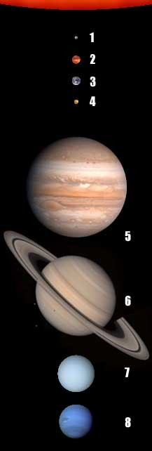
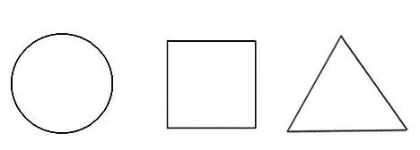

Какая-то информация, заисаная в один абзац, будем проверять еще и перенос строки. Будет написана информация о какой-нибудь (нашей) солнечной системе
Так же проверяем блок,
который должен сохранять
форматирование в документе
На Луне жил звездочёт
На Луне жил звездочёт
Он планетам вёл учёт:
МЕРКУРИЙ 1 — раз,
ВЕНЕРА 2 — два-с,
Три — ЗЕМЛЯ 3,
Четыре — МАРС 4,
Пять — ЮПИТЕР 5,
Шесть — САТУРН 6,
Семь — УРАН 7,
Восемь — НЕПТУН 8,
Девять — дальше всех ПЛУТОН 9,
Кто не видит — выйди вон!
Информация была взята с одноименной страницы интернет-ресурса Wikipedia, в источниках которой указаны исследования NASA
 
Вы можете с нами связаться по телефону
Или написать нам на почту